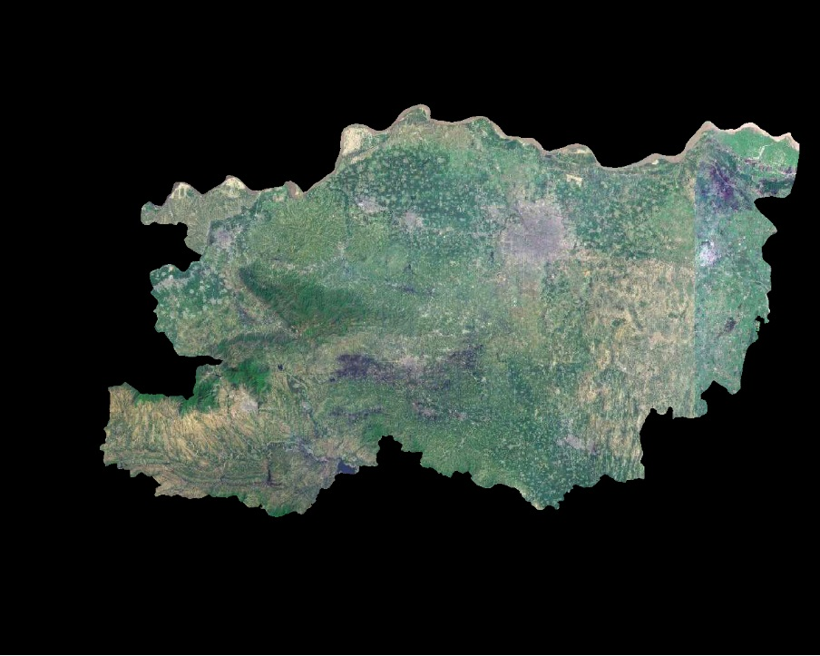
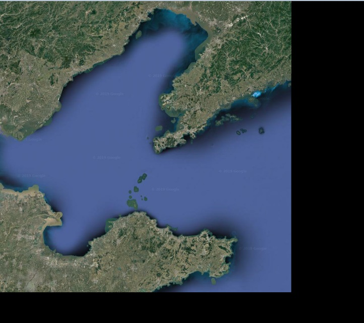
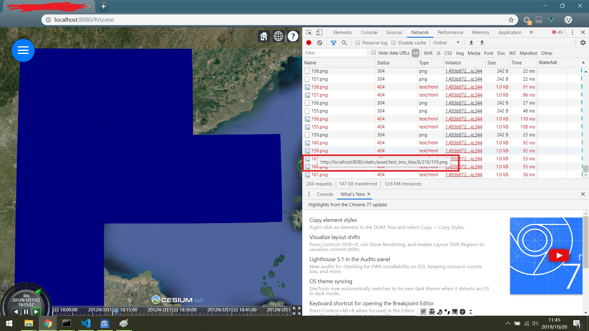

GDAL处理地图栅格Tif黑边的方法
通过地图下载软件LocaSpaceViewer下载卫星影像拼接成Tif文件后，会出现黑边问题。此外在Cesium中浏览瓦片地图会出现蓝色区域。下面即分析这两个问题出现的原因和解决方法。
下载方法
LocaSpaceViewer中可选择行政区域下载卫星影像，这种方式拼接后的tif文件必然会出现黑边，如图1所示。

推荐在LocaSpaceViewer中以瓦片矩形区域下载卫星影像。具体方法为：
- 在该链接google-maps-coordinates-tile-bounds-projection处查询瓦片的经纬度。
- 在LocaSpaceViewer中绘制矩形，并将矩形顶点的经纬度设置为待下载瓦片的经纬度。
- 在LocaSpaceViewer下载指定瓦片。
该方法也可能会出现黑边，如图2所示。

此外，将tif文件转换成标准瓦片后，在Cesium中浏览瓦片地图会出现蓝色区域，如图3所示。

问题分析
对问题1，下载不规则边界的地图时，地图下载软件不会自动填充白色或变成透明，所以导致黑边问题1的产生。
对问题2，产生原因目前不清楚，但因黑边的产生很有规则，所以解决方法会比较简单。
对问题3，产生原因是蓝边对应的瓦片不存在。
解决方法
对问题1，可采用链接用LSV下载的高清地图去黑边教程指明的方法去除黑边，但使用如下命令：
1 | gdal2tiles.py <image> <tilesdir> |
生成瓦片时会报错，因此建议采用瓦片矩形区域下载卫星影像，不要下载行政区域卫星地图。
对问题2，使用如下命令去除黑边：
1 | // 查看tif文件元数据信息 |
对问题3，使用LocaSpaceViewer下载指定级别指定区域的卫星影像即可。
参考链接
- Cesium卫星地图和高程数据切片经验总结,by jackhuang.
- 用LSV下载的高清地图去黑边教程,by LocaSpaceViewer.
- cesium加载离线tms切片,by nygfcn.
- python gdal安装与简单使用,by mumu122.
- windows10 环境中安装GDAL及其python绑定,by 蔚蓝小栈.